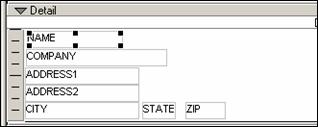

Suppressing Blank Space on a Report
Alpha Anywhere lets you automatically suppress blank space at the end of each report section.
Normally, if you define a report section of a certain height, the report will print using that size. For example, you may have a single row of data in your report's Detail section. If you define the Detail section to be one inch high, then Alpha Anywhere will print each row of data followed by blank space so that there is one inch between each row of data.
You can choose to have Alpha Anywhere automatically suppress blank space at the end of each report band (i.e. section). To do this, right click in the white space of the report band, choose the Properties command and then click on the Region tab. Check the Shrink contents of band check box.
You can choose to have Alpha Anywhere suppress blank space within a report band by selecting the Allow shrink property for any objects in a section of Report. For example, the following diagram shows the Detail section of a report. The Address2 field and Company field can sometimes be blank, and so their Allow shrink property has been enabled to suppress the space taken up by these fields when they are blank.

 IMPORTANT : When you
set the Allow shrink property of objects that are above and below each
other be sure that the objects are not actually touching. Make sure that
at a minimum, there is a slight amount of vertical separation between
objects.
IMPORTANT : When you
set the Allow shrink property of objects that are above and below each
other be sure that the objects are not actually touching. Make sure that
at a minimum, there is a slight amount of vertical separation between
objects.
Another way in which you can suppress blank space within a Report section is to use the Rich Text Object on the report, and place the fields inside the Rich Text Object (RTO). (This is the technique used by the Label Genie when you have it create a mailing Label design). For example, the following diagram shows how the address fields in the above diagram could have been laid out in a RTO. The key to using the RTO is to terminate lines with Shift-Enter (rather than just Enter ) to create suppressible lines. If a line is terminated with Enter it is not suppressed when it is blank.
You can also choose to have Alpha Anywhere automatically suppress blank space at the end of individual objects you place on a report. For example, you may have placed a multi-line memo field object on a Report. You would make the object size big enough to print the maximum memo size. However, for records that contain less text, you would like to shrink the size of the object. To shrink the size of an object, right click on the object, select the Setup tab and check the Allow shrink check box.
 TIP : To shrink the
size of a multi-line character field, place a rich text object on the
form, and place the character field inside the rich text object.
TIP : To shrink the
size of a multi-line character field, place a rich text object on the
form, and place the character field inside the rich text object.
 IMPORTANT : If the
report band that you want to shrink has multi-line objects in it, be sure
to enable shrinking of the individual objects in the report band.
IMPORTANT : If the
report band that you want to shrink has multi-line objects in it, be sure
to enable shrinking of the individual objects in the report band.
See Also